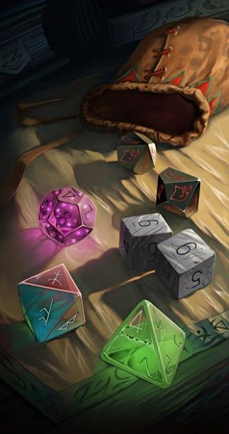
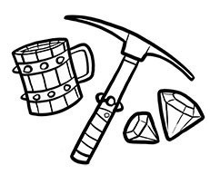
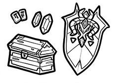
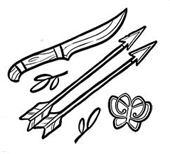
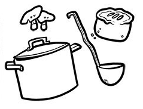
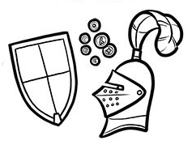
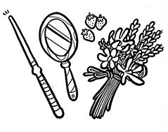
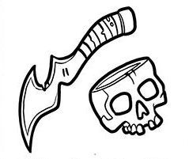
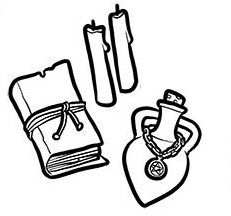

Criando um Personagem
O primeiro passo para se criar um personagem em Dungeons and Dragons é você pensar no conceito que você deseja para esse personagem, como por exemplo, um hábil guerreiro que empunha duas espadas ou um sábio mago que passou anos da sua vida estudando para aprender cada vez mais sobre a trama da magia.
Com esse conceito pensando, seguimos para as escolhas que afetam a mecânica do jogo. Como segundo passo, temos três escolhas importantes, que são a raça, classe e antecedente do seu personagem. Você faz essas escolhas para formar o conceito de personagem que você imaginou.
No Livro do Jogador são apresentadas nove raças, doze classes e treze antecedentes para o jogador poder escolher um de cada e poder fazer as mais diversas combinações que desejar. A seguir irão ser detalhadas as raças, classes e antecedentes presentes no Livro do Jogador.
O terceiro passo é a definição dos valores dos seis atributos presentes no jogo: Força, Destreza, Constituição, Inteligência, Sabedoria e Carisma. No Livro do Jogador são citadas três formas de definir esses valores:
Determinados aleatoriamente, jogando 4d6, desconsiderando o menor valor e somando os demais para cada atributo;
Distribuir os valores 15, 14, 13, 12, 10 e 8 entre os atributos;
Sistema de compra por pontos. Os jogadores recebem 27 pontos que servem para comprar atributos. Todos os atributos começam no valor 8 e podem ser aumentados, contudo custos são variáveis, quanto maior valor desejado, maior quantidade de pontos deve gastar.
O último passo é preencher as demais informações que a ficha pede, que necessitavam das escolhas realizadas nos passos anteriores.
Raças dos Personagens
Todos os personagens pertencem a uma raça, dentre as raças humanoides inteligentes. As raças ganham habilidades devido sua herança genética.
-
Anão
Corajosos e resistentes, os anões são conhecidos como guerreiros habilidosos, mineiros e trabalhadores de pedra e metal
Traços Raciais: +2 Constituição, Visão no Escuro, Resiliência Anã e Especialização em Rochas
-
Draconato
Draconatos se parece muito com dragões eretos em forma humanóide, embora não tenham asas ou cauda
Traços Raciais: +2 Força, +1 Carisma, Ancestral Dracônico, Arma de Sopro e Resistência a Dano
-
Elfo
Elfos são um povo mágico de graça sobrenatural, vivendo no mundo, mas não totalmente fazendo parte dele
Traços Raciais: +2 Destreza, Visão no Escuro, Sentidos Aguçados, Ancestral Feérico e Transe
-
Gnomo
A energia e o entusiasmo de um gnomo pela vida brilha em cada centímetro de seu pequeno corpo, eles aproveitam cada dia de suas vidas

Traços Raciais: +2 Inteligência, Visão no Escuro e Astúcia de Gnomo
-
Halfling
Os pequenos halflings sobrevivem em um mundo cheio de criaturas maiores e evitando de serem notados
Traços Raciais: +2 Destreza, Sorte, Bravo e Agilidade Halfling
-
Humano
Os humanos são as pessoas mais adaptáveis e ambiciosas entre as raças comuns. O que quer que os impulsione, faz eles serem pioneiros no mundo
Traços Raciais: +1 Todos os Atributos e Idioma Extra
-
Meio-Elfo
Meio-elfos combinam o que alguns dizem ser as melhores qualidades de seus pais: inventividade dos humanos e amor pela natureza dos elfos
Traços Raciais: +2 Carisma, +1 Dois Atributos, Visão no Escuro, Ancestral Feérico, Versatilidade
-
Meio-Orc
Alguns meio-orcs se tornam líderes orgulhosos de comunidades orcs. Alguns se aventuram no mundo para provar seu valor
Traços Raciais: +2 Força, +1 Constituição, Visão no Escuro, Implacável e Ataques Selvagens
-
Tiefling
Ser o motivo de olhares e cochichos, sofrer violência e insultos na rua, ver desconfiança e medo em todos os olhos: esse é o destino do tiefling
Traços Raciais: +2 Carisma, +1 Inteligência, Visão no Escuro, Resistência Infernal e Legado Infernal
Classes dos Personagens
A classe do personagem determinará algumas habilidades especiais e principalmente a quantidade de pontos de vida do personagem.
-
Bárbaro
Um guerreiro feroz de origem primitiva que pode entrar em fúria na batalha

Dado de Vida: d12
Habilidades Primárias: Força
Salvaguardas: Força e Constituição
-
Bardo
Um mágico inspirador cujo poder ecoa a música da criação

Dado de Vida: d8
Habilidades Primárias: Carisma
Salvaguardas: Destreza e Carisma
-
Bruxo
Um manipulador de magia que ganhou seus poderes por uma barganha com uma entidade

Dado de Vida: d8
Habilidades Primárias: Carisma
Salvaguardas: Sabedoria e Carisma
-
Clérigo
Um campeão sacerdotal que exerce magia divina a serviço de um poder superior

Dado de Vida: d8
Habilidades Primárias: Sabedoria
Salvaguardas: Sabedoria e Carisma
-
Druida
Um sacerdote da Antiga Fé, empunhando os poderes da natureza e adotando formas de animais

Dado de Vida: d8
Habilidades Primárias: Sabedoria
Salvaguardas: Inteligência e Sabedoria
-
Feiticeiro
Um conjurador que extrai magia inerente de uma dádiva ou linhagem

Dado de Vida: d6
Habilidades Primárias: Carisma
Salvaguardas: Constituição e Carisma
-
Guerreiro
Um mestre do combate marcial, habilidoso com uma variedade de armas e armaduras

Dado de Vida: d10
Habilidades Primárias: Força ou Destreza
Salvaguardas: Força e Constituição
-
Ladino
Um canalha que usa furtividade e malandragem para superar obstáculos e inimigos

Dado de Vida: d8
Habilidades Primárias: Destreza
Salvaguardas: Destreza e Inteligência
-
Mago
Um usuário de magia erudito capaz de manipular as estruturas da realidade

Dado de Vida: d6
Habilidades Primárias: Inteligência
Salvaguardas: Inteligência e Sabedoria
-
Monge
Um mestre das artes marciais, aproveitando o poder do corpo em busca da perfeição física e espiritual

Dado de Vida: d8
Habilidades Primárias: Destreza e Sabedoria
Salvaguardas: Força e Destreza
-
Paladino
Um guerreiro santo vinculado a um juramento sagrado

Dado de Vida: d10
Habilidades Primárias: Força e Carisma
Salvaguardas: Sabedoria e Carisma
-
Patrulheiro
Um guerreiro que combate ameaças nos limites da civilização

Dado de Vida: d10
Habilidades Primárias: Destreza e Sabedoria
Salvaguardas: Força e Destreza
Antecedentes dos Personagens
Ao escolher um antecedente para o seu personagem, além de ganhar alguns benefícios mecânicos, você está escolhendo um aspecto importante para a construção da história e da personalidade do seu personagem. Porque ao escolher o antecedente do personagem, você também deve escolher os traços de personalidade, ideais, vínculos e defeitos presentes no seu personagem.
Lista de Antecedentes:
- Acólito: Você passou sua vida em serviço de um templo. Você age como um intermediário entre o reino do sagrado e do mundo mortal.
- Artesão da Guilda: Você é membro de uma guilda de artesãos, hábeis em um campo particular e associado a outros.
- Artista: Você é seu melhor na frente de um público. Você sabe como prendê-los, entretê-los, e mesmo inspirá-los.
- Charlatão: Você sempre teve um jeito com pessoas. Você sabe o que os faz funcionar, e com um pouco de cuidado pode os ler como um livro.
- Criminoso: Você é um criminoso experiente, com uma história em quebrar a lei. Você é próximo do mundo de assassinato, roubo e violência.
- Eremita: Você viveu afastado, seja numa comunidade fechada como um monastério ou totalmente sozinho.
- Forasteiro: Você cresceu no ermo, longe da civilização e os confortos das cidades e tecnologia.
- Herói do Povo: Você vem de uma posição social humilde, mas seu destino é algo muito maior.
- Marinheiro: Você navegou por anos. Nesse tempo você encarou tempestades poderosas, monstros e aqueles tencionando afundar seu navio.
- Nobre: Você entende poder, riqueza e privilégio. Você possui um título nobre e sua família é dona de terras, coleta impostos e tem influência política.
- Órfão: Você cresceu nas ruas sozinho, órfão ou pobre. Você não tinha ninguém para cuidar de você e teve que aprender a se virar.
- Sábio: Você passou anos estudando e aprendendo. Você fuçou escritos, estudou pergaminhos e ouviu os grandes especialistas no assunto que lhe interessa.
- Soldado: Guerra está em sua vida desde quando você consegue se lembrar. Você treinou desde jovem e aprendeu como ficar vivo no campo de batalha.